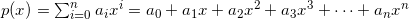
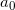
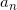
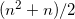
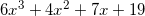
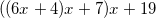
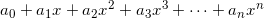
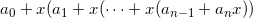

Here's a general degree-n polynomial:

To evaluate such a polynomial using a computer program, several approaches can be employed.
The simplest, naive method is to compute each term of the polynomial separately and then add them up. Here's the Python code for it:
def poly_naive(A, x):
p = 0
for i, a in enumerate(A):
p += (x ** i) * a
return p
A is an array of coefficients, lowest first,  until .
This method is quite inefficient. It requires n additions (since there are n+1 terms to be added) and  multiplications.
Iterative method
It's obvious that there's a lot of repetitive computations being done by raising x to successive powers. We can make things much more efficient by simply keeping the previous power of x between iterations. This is the "iterative method":
def poly_iter(A, x):
p = 0
xn = 1
for a in A:
p += xn * a
xn *= x
return p
In this code xn is the current power of x. We don't need to raise x to a power on each iteration of the loop, a single multiplication suffices. It's easy to see that there are 2n multiplications and n additions for each computation. The algorithm is now linear instead of quadratic.
Horner's rule
It can be further improved, however. Take a look at this polynomial:

It can be rewritten as follows:

And in general, we can always rewrite the polynomial:

As:

This rearrangement is usually called "Horner's rule". We can write the code to implement it as follows:
def poly_horner(A, x):
p = A[-1]
i = len(A) - 2
while i >= 0:
p = p * x + A[i]
i -= 1
return p
Here we start by assigning to p and then successively multiplying by x and adding the next coefficient. This code requires n multiplications and n additions (I'm ignoring here the modification of the loop variable i, as I ignored it in all other algorithms, where it was implicit in the Python for loop).
While asymptotically similar to the iterative method, Horner's method has better constants and thus is faster.
Curiously, Horner's rule was discovered in the early 19th century, far before the advent of computers. It's obviously useful for manual computation of polynomials as well, for the same reason: it requires less operations.
I've timed the 3 algorithms on a random polynomial of degree 500. The one using Horner's rule is about 5 times faster than the naive approach, and 15% faster than the iterative method.